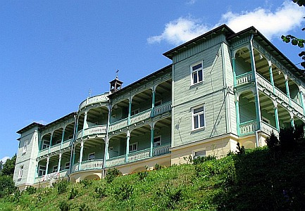

Represje

We wczesnych latach 50., w okresie napiêæ miêdzy pañstwem a Ko¶cio³em polityka w³adz PRL, zale¿nych od ZSRR, zmierza³a do z³amania opozycji i wszelkich niezale¿nych instytucji, z których jedyn± pozosta³ Ko¶ció³ katolicki na czele z prymasem.
Spraw± zajê³o siê Ministerstwo Bezpieczeñstwa Publicznego, powsta³e na bazie Resorcie Bezpieczeñstwa Publicznego przy Polskim Komitecie Wyzwolenia Narodowego, aresztuj±c go 25 wrze¶nia 1953 w ramach represji komunistów wobec Ko¶cio³a katolickiego. Wiêziony by³ z siostr± zakonn± Mari± Leoni± Graczyk i ksiêdzem Stanis³awem Skorodeckim.
Przebywa³ w wielu miejscach odosobnienia.
Na zdjêciu Klasztor nazaretanek w Komañczy - jedno z miejsc odosobnienia.